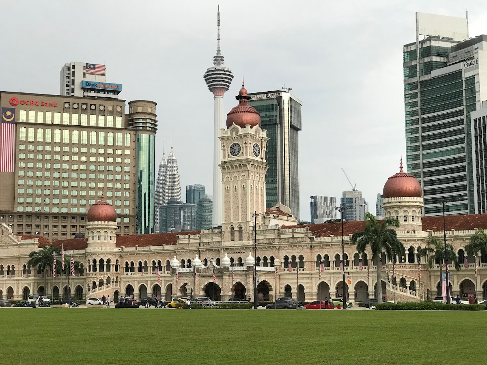
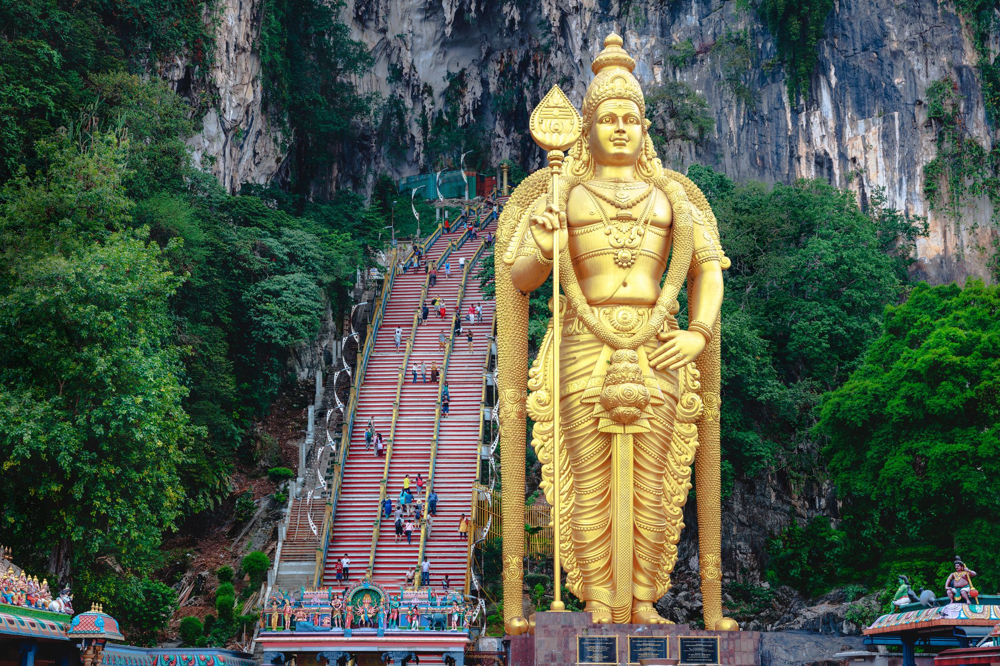
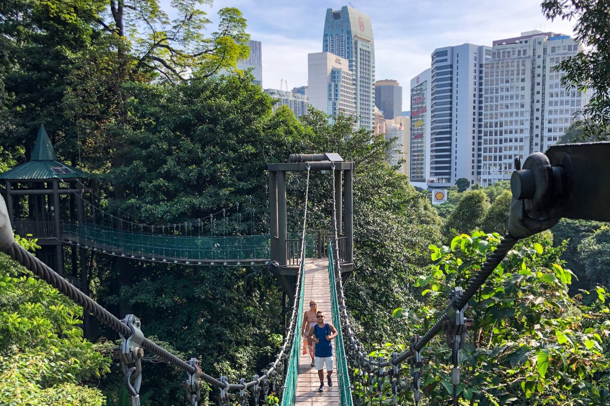
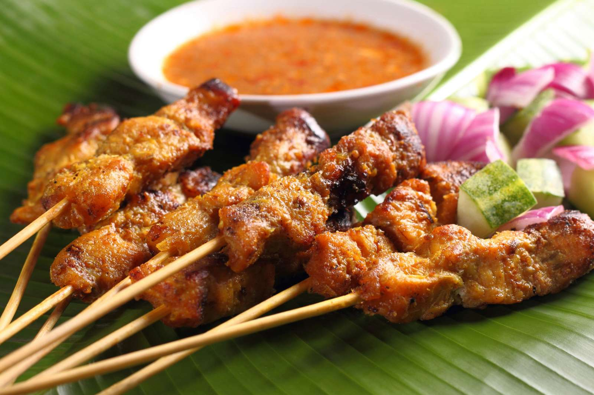

Kuala Lumpur Travel Guide
Explore the iconic landmarks, scenic spots, and culinary delights of Malaysia's capital.
Must-Visit Landmarks

Petronas Twin Towers
Standing at 452 meters, these twin skyscrapers offer breathtaking city views from the observation deck.

Merdeka Square
The historic site where Malaysia declared independence, surrounded by colonial-era buildings.
Famous Scenic Spots

Batu Caves
A Hindu pilgrimage site featuring a golden statue of Lord Murugan and 272 colorful steps leading to a cave temple.

KL Forest Eco Park
The only remaining rainforest in the city, offering a canopy walkway and scenic trails.
Cuisine & Local Delicacies

Nasi Lemak
Malaysia’s national dish, featuring coconut milk-infused rice served with sambal, fried chicken, and anchovies.

Satay
Grilled meat skewers served with a flavorful peanut sauce, popular in night markets and street stalls.